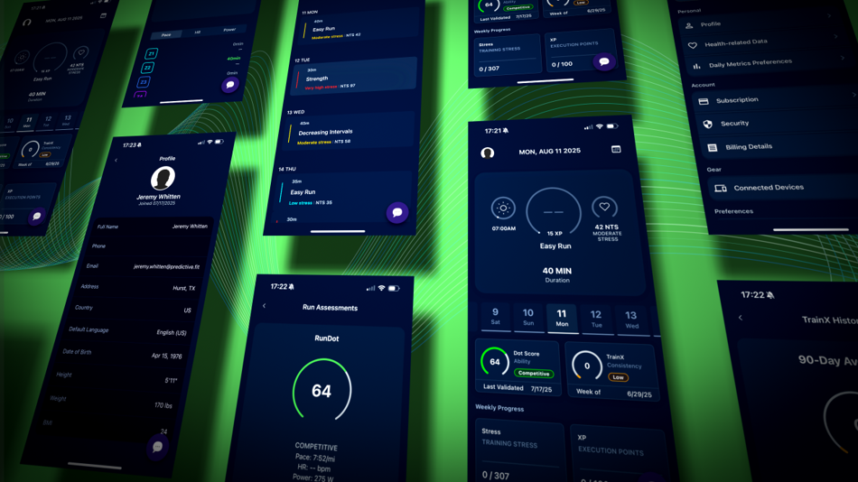

|
|

This is why runners don't go back to generic plans.
When your training is built around your body, the results speak for themselves. Here's what RunDot athletes are saying:
"I've used three different training apps over five years. RunDot is the first one that actually felt like it was written for ME. 14-minute marathon PR in my first season."
"I was running more miles and getting slower. RunDot showed me I was overtraining. Dialed back the volume, nailed my paces, and ran a 3:42 at my next marathon — a 22-minute PR."
"The RunDot Score metric is unlike anything I've seen. Knowing exactly where I am and where I need to be to hit my goal pace changed how I approach every single run."

You received this because you started a RunDot trial.
Unsubscribe | Manage Preferences
© 2026 Predictive Fitness, Inc. All rights reserved.